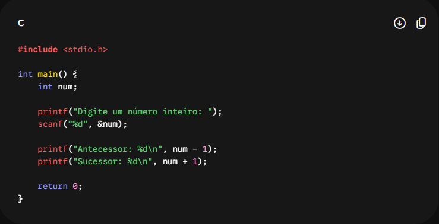
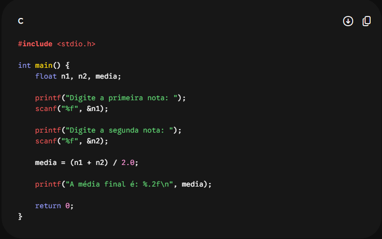
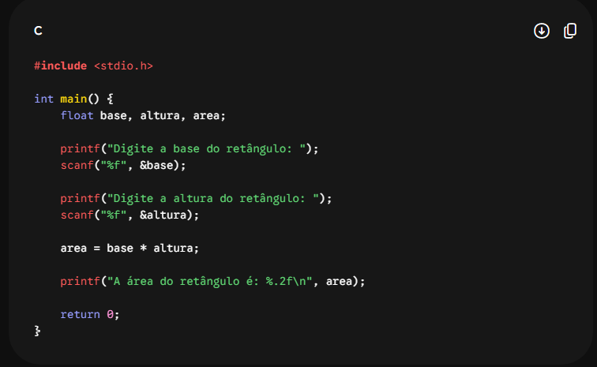
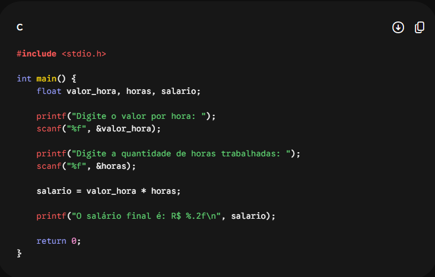

Descrição: Crie um programa que exiba "Olá, Mundo!" e "Bem-vindo à programação em C."
Explicação: A biblioteca stdio.h é incluída para liberar a função printf. O comando \n serve para pular uma linha na tela.

Descrição: Solicite o nome e a idade do usuário e exiba uma mensagem de apresentação.
Explicação: Foi criado um vetor de char para o nome e uma variável int para a idade. O comando scanf guarda os dados digitados.

Descrição: Leia dois números inteiros e exiba a soma.
Explicação: O programa lê dois inteiros com %d, faz a adição usando o operador + e mostra o resultado.

Descrição: Leia dois números e mostre soma, subtração, multiplicação e divisão inteira.
Explicação: Usa os operadores +, -, * e /. Na divisão, é feita uma verificação para evitar a divisão por zero.

Descrição: Leia um número inteiro e mostre seu antecessor e sucessor.
Explicação: Subtrai-se 1 do número para achar o antecessor e soma-se 1 para achar o sucessor.

Descrição: Leia duas notas (float) e calcule a média.
Explicação: Usa o tipo float para permitir números decimais e calcula a média somando as duas notas e dividindo por 2.

Descrição: Leia uma temperatura em Celsius e converta usando a fórmula F = (C * 9 / 5) + 32.
Explicação: Aplica a fórmula de conversão de temperatura usando valores decimais para manter a precisão do cálculo.

Descrição: Leia base e altura e calcule a área.
Explicação: O cálculo da área é feito multiplicando o valor da base pelo valor da altura digitados pelo usuário.

Descrição: Leia o valor da hora e a quantidade de horas trabalhadas. Calcule o salário.
Explicação: Multiplica-se a quantidade de horas trabalhadas pelo valor pago por hora para obter o salário total.

Descrição: Leia dois números e mostre soma, subtração, multiplicação, divisão e resto da divisão.
Explicação: Além das operações básicas, o operador % calcula o resto da divisão inteira entre os dois números.

Descrição: Solicite nome, idade, nota 1 e nota 2. Exiba uma ficha do aluno contendo os dados e a média final.
Explicação: Junta o uso de texto, números inteiros e decimais para formar um relatório formatado com os dados do aluno.